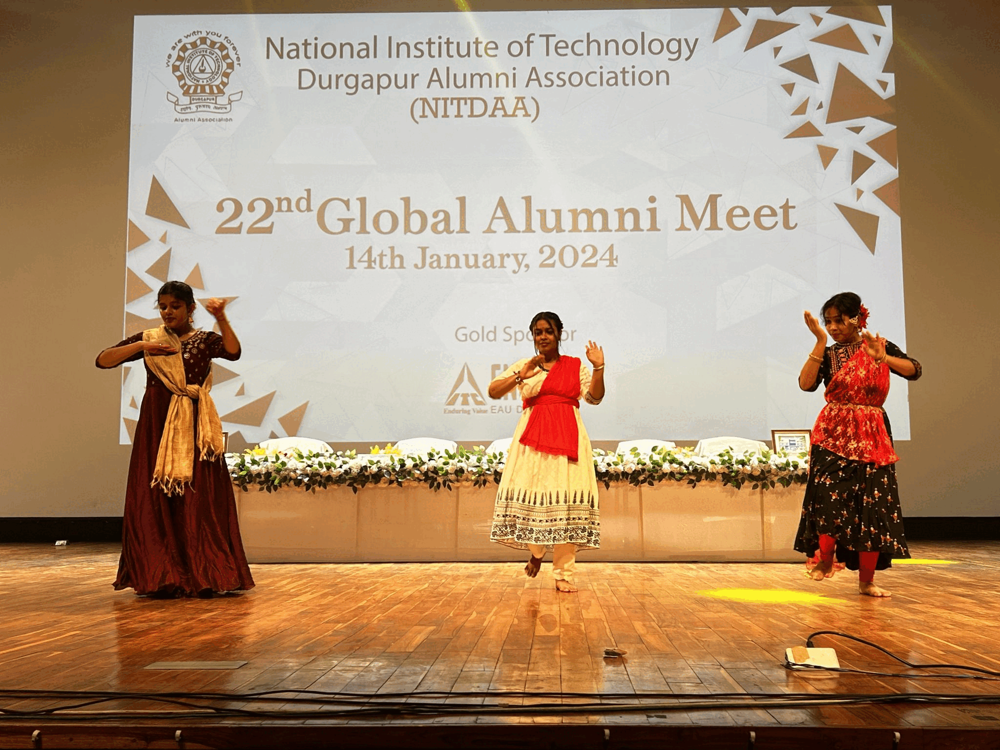

Centre for Alumni Affairs & International Relations (CAAIR) is the nodal centre in the National Institute of Technology Durgapur for liaison with REC/NIT Durgapur alumni all across the globe, initiating research/academic collaboration with universities and organizations in India and abroad and other outreach activities. NIT Durgapur is proud to have more than 24000 engineers, technocrats, scientists, managers and entrepreneurs as its global brand ambassadors. CAAIR makes all-out efforts to get them involved in the all-round development and growth of the Institute. It supports the Institute’s mission by way of continually opening up opportunities that strengthens the mutually beneficial bond between the institute and its alumni. This promotes and encourage the alumni to disseminate professional knowledge through seminars and interaction with the students and faculty. NIT Durgapur is also striving to break the barriers and reach out to the national and international universities and organizations by way of collaborative activities like joint research supervision, publications, projects and student exchange. The Centre initiates all such activities. The Centre also coordinates various outreach activities with the community.
It is our alumni whose significant contribution to the society has made our National Institute of Technology Durgapur (formerly, Regional Engineering College Durgapur) an institute of glory. Being a part of this glorious Institute, it becomes one of our prime duties to instil the essence of brotherhood into the minds of the alumni and their siblings from Alma-mater. We achieve this through the establishment of The NIT Durgapur Students Alumni Interaction (SAI) Cell. The SAI Cell is a group of students who voluntarily assist the functioning of the Centre for Alumni Affairs & International Relations (CAAIR). We are under the endorsement of the Dean (Alumni Affairs and Outreach). Having completely dedicated to nurturing the bond between students and alumni, the SAI Cell has become an indispensable part of the CAAIR and thus acting as a common platform for networking and interaction. We extend our hands towards our alumni and help them reconnect to their Alma- mater. Through regular interactions with the students, the alumni get a chance to share their valuable experiences and impart the knowledge they have acquired to the next generation of NITDIANs. Also, with this interchange, they get a glimpse of the young minds of the nation. We play an instrumental role in organising the Eminent Alumni Lecture, Student-Alumni Interaction in the campus, Industry-Institute-Interaction Program, Grand Alumni Homecoming, various other reunions and publication of the Annual Yearbook. However, we look forward to offering greater assistance to both our institute and alumni through innovative programs in a brighter future. With the aim of mending the broken link between students and alumni, the Alumni Cell launched the Alumni-Student Mentorship Program with the belief that close interaction with alumni will help students gather invaluable advice regarding overall development and will also aid them in taking crucial informative life-changing decisions. We feel their valuable experience would really enrich younger minds. Our team was formed with the aim to involve the students in the Alumni Activities from the student- hood itself. The team is to promote the interests of and understanding between the students of the past, present, and future NIT Durgapur through the programs and services offered by the organization. The objective is to educate the general students with a better understanding of the NIT Durgapur Alumni Network and likewise bring the alumni community up to date with the current student body. Being students ourselves, we exactly know the flavour of being a NITDIAN and through various interactions, we assist students in having a better communication with the alumni. We help the students in sharing their college life experiences with the alumni which resonate with their experiences giving them a greater nostalgic effect. We form a part of the endeavour to promote tradition and unity within the Institute and ultimately to preserve a lifelong connection for all those who pass through the portals of NIT Durgapur. The team also tries to develop a cordial and advanced professional relationship amongst the ex-students and present students helping the novices figure out the dubious nature of the journey outside NIT Durgapur. The alumni-driven initiatives for the benefit of students, assisting Alumni in different cities and organising NITDIAN seminar, various reunions and bridging the connectivity gap between the Institute and alumni allows SAI Cell Volunteers to get a splendid view of the ‘Alumni’ world. Working for the betterment of the Institute also motivates students to understand the values created by all well-wishers of NIT Durgapur. Through the efforts of SAI Cell, alumni of REC/NIT Durgapur are now able to actively contribute towards the betterment of their Alma-mater and we feel proud to be a part of the Centre for Alumni Affairs & International Relations and witness the evolution of our National Institute of Technology Durgapur.

Dear Alumnus/Alumna, On behalf of Centre for Alumni Affairs &
International relations (CAAIR), NIT Durgapur, I wish you all a very
happy,healthy and prosperous new year! As you know, the Centre for
Alumni Affairs & International Relations (CAAIR), established in the
year 2018 under the guidance of our Honourable Director, is the
coordinating centre of the Institute for liaison with REC/NIT Durgapur
alumni all across the globe, initiating research/academic
collaboration with universities and organizations in India and abroad
and other outreach activities. Currently, our interactions with alumni
are taking place on multiple dimensions. The most important point for
us is the absolute increase in alumni footfall on campus. There is no
particular season now for alumni visits – they happen throughout the
year. We are delighted that they are keen to spend a day in the
campus, interact with students and faculty, and learn about the
progress of the Institute and how they can chip in to help. The
“Eminent Alumni Lecture Series” is a runaway success, and we recently
hosted the 15 th lecture. A Lecture in the name of “Professor Asoke
Sen Memorial Lecture” has been instituted in honour of Prof. Asoke
Kumar Sen, the Legendary and inspiring faculty of R.E.College Durgapur
(Presently NIT Durgapur). Being associated with this esteemed
Institute as a student, alumnus, faculty, Associate Dean (Alumni &
Outreach) and presently as coordinator, CAAIR, has helped me to
perceive the Institute through multi-dimensional aspects. As a result,
the need to address dynamic requirements of the Institute and the
strategies thereof has become immaculate. You are a part of our
timeline, and your engagement with the Institute is crucial in helping
us to reach our mission and vision. We have taken this approach
following major Technical Institutes in India and abroad to increase
our sustainable fundraising and enhance our NIRF ranking. I do
envisage alumni playing a proactive role in successful implementation
of the Institute diamond Jubilee year exercise including facilitating
mentoring students & faculty, industry and academia linkages and
participating actively in the development and overall growth of our
beloved Alma mater. The joy of giving back during Institute Diamond
Jubilee year is another key step in this direction and I hope you will
actively participate and contribute towards developing sustainable
fund raising, building NIT Durgapur brand etc. Therefore, be proud to
be connected, and make other alumnus/Alumna proud by connecting and
contributing generously to his/her academic temple i.e., our Alma
mater. We would also like to acknowledge the generous contribution of
our notable Alumnus Mr. Jyoti Prasad Bhattacharya (1982, B.E,
Electrical Engineering) by gifting the dynamic, vibrant and responsive
website for Centre for Alumni Affairs & International Relations
(CAAIR). Please register through this newly developed CAAIR website or
alumni page and avail the alumni card along with the other benefits of
this digital platform. We look forward to a strong support from you.
If you have any constructive idea on how we can engage with you,
please feel free to contact us at alumni@admin.nitdgp.ac.in Let’s
Networking (N) Involving (I) and Transforming (T)-DGP (DiGital
Platform). Together we could do better & we should.
Sincerely,
Shibendu Shekhar Roy ( 1999, B.E, Mechanical Engg. ) Convener, CAAIR
National Institute of Technology Durgapur